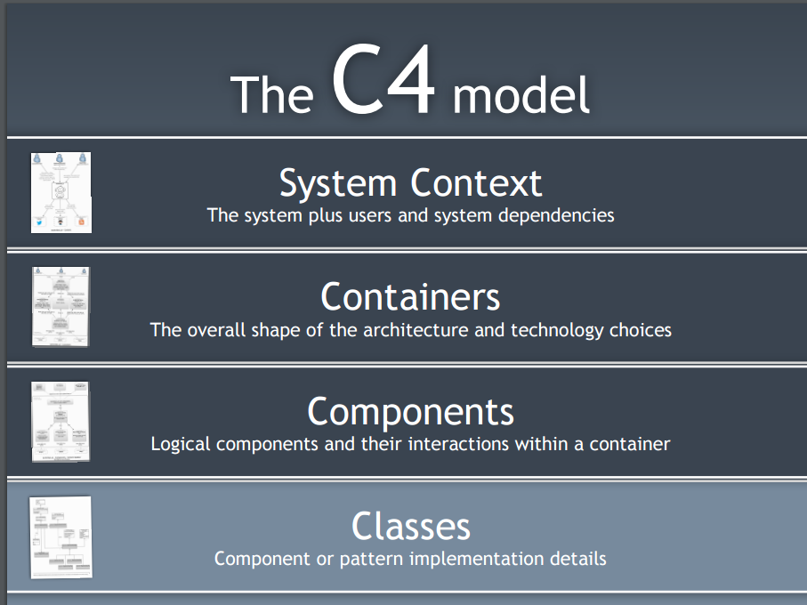

Seán Mulcahy BlogSome ramblings
One of the more difficult things I have had to do in my career is to make the transition into a managerial/team lead role. One of the main reason's people leave a company is because of their line manager, so not everyone gets it right.
Why is it hard you ask?
Mainly because it involves people! And everyone is different. No two people are the same. People react differently to different situations. But it keeps it interesting!
How did I learn?
Most of it is by learning the hard way - learning by experience. Doing it the wrong way, recognising that and then learning from it.
The two hardest things to learn are:
- Delegation
- Line management for your team members
Delegation
Quite often the reason you were chosen to be a manager is because of the good work you did as an individual to that point. You probably went over and above on a project or were the go to person etc. So now that you are a manager you are more than likely to carry on like that. I have seen this pretty much every time some makes the transition. If you continue to do this, first of all you'll get burnt out quickly, you'll be a bottleneck for the team but even worse you'll be a bad manager! You won't progress your team members by exposing them to the tasks/situations they need to experience to progress their own skills.
For those reasons, you need to delegate. But it's not just about delegation. You could still fall into the trap of being too involved and you'll end up micro managing your team members. This is probably worse than just doing the tasks yourself. Because now the person you are micro managing is going to feel controlled and not at all empowered. This can be quite demotivating.
To delegate properly you need to have trust in the people you are delegating to. It's hard to farm off a task you are responsible for to someone else but you have to do it. If they succeed, great. If they fail, it's not ideal but they'll learn so much through that and once they learn from it, adjust and are able to do that task going forward, that's one more thing off your list, giving you more time to spin all the other plates you have as a manager/team lead.
As a result of this not only will you have eased your work load, for your team member they will now feel more empowered, may have learnt a new skill and it might be another feather in their bow needed for their career progression. So, this brings us nicely onto line management ...
Line Management
A big part of line management is being responsible for people's progression in their skills and in their careers. If you care about this and help them progress, they will be happier, more motivated, more productive and will contribute to a better output for the team as a whole.
- Don't treat everyone like how you would like to be treated - everyone is motivated different - what motivated people - balacned teams - sometimes its best for people to leave your team - PDPs/objectives
- WED Club - weekly meeting to give brown bags on topics like CI/CD, Jenkins, Coding (Java, Spring), Testing (testing pyramid, unit test, Cucumber BDD, Unix, Servers, K8. Give them tasks to complete as homework
- No point pairing with Senior Developers, they'll be overwhelmed and the Senior Devs will be bored at going so slow and also might have forgotten how to explain the simple step
- Pair with someone next level up, someone who has just been through it
- For 2 of them we gave them a (non mission critical) project to pair on
- Very daunting for them, so much to learn about ways of working, coding, tools, 3 letter acronyms
- Simple objectives, small goals, learning is the main goal, soak up info, eventually they will be able to contribute
- Don't treat everyone like the old saying 'as you would like to be treated'
- Diff people are motivated differently
- Motivation - Mastery/Money/Clear Goals/Feedback/Recognition/Money
- Annual Reviews
- Objectives
- SMART objectives
- Managing Gods gift
- Progressing developers towards Senior Developer - Not just being good technically, what else do they need to do ..
- Graduates going to Developer level 1
- Apprentices completely new to technology
- Company focus rather than own selfish view as an employee
- Regular catchups & feedback, objectives
- PDPs/Annual appraisals - don't leavt ie all to year end or 6 month checkpoints!
- Protect the team
- One of the main people leave jobs is becasue of their manager
- Team building/team socials
- Culture
- Distributed Teams
- Establish good ways of working
- Clear direction
Hardest part of being a manager?
One of the hardest thing to do as a line manager is to manage people who have character / personality things to improve on.It can be a difficult subject to broach as it can be quite personal. They may not want to acknowledge it and also it could be a long process for someone to change parts of their personality or makeup.
Managing Managers
If you reach 'Zen' level management you'll become a manager of managers. You'll be responsible for these managers and the their teams also. If you are details person who likes being very hands on, then it's harder again as you are one level removed from the nitty gritty. So that trust I mentioned earlier is even more important now.
Being a manager of a manager means you also become more of coach or mentor for them, in particular if they are new to the role. You'll essentially be guiding them through all the situations I mentioned above that you have experienced yourself previously as they come across similar ones. You'll need to get them to delegate and also get them to care about their employees careers. But, there will always be new different situations to deal with, so you will also learn from it - everyday is a school day!
Career progression
A company wide matrix to define ...

Turning a team around
Situation:
One of the teams I took over had very low morale. This due to lots of reasons, here are some of them:
- Disgruntled employees unhappy with previous line manager and last set of annual appraisals
- Was told by the previous manager in the handover that a few people were likely to leave soon
- Too Much Support work and not enough new engineering / development
- Architects Silo - handed off projects late in the decision-making process
- High ratio of contractors to permanent staff in the team
Task:
Try and keep the team together and motivated, stable and avoid having too much of a brain drain at the same time. All while delivering important projects for the company.
What did I do?
Here are some of the things that I did to try and improve the situation. Most of it is probably common sense but for some reason it wasn't done previously. Lots of simple changes had an overall positive impact.
Line management
Actions:
- Held more regular one to ones
- Gave everyone a blank slate, whatever issues individuals had with previous manager would be put to one side (he said / she said), would be judged on what I saw of them from that point on
- Over first few months tried to get to know the team members and what motivated them
- Some wanted more money, some wanted more interesting work, some wanted more feedback in 1 on 1's
- Told them we can only control the controllables, what do we have control of within the team to change
- Focus on individuals and their career progression. Set goals for people to achieve within the team and if they succeeded in those then they would warrant good appraisals and from there may come good financial reward or promotion etc. depending on budget. Also set technical goals for areas to improve on with a long-term aim of promotion to next level.
- Succession planning: recruit more permanent staff with a longer-term goal of training them up and having them in place if people were to leave over time.
- Let go of some long-standing contractors.
Results:
- Team happier that more focus was put on them as individuals, their concerns and their career progression
- Team morale improved
- Peoples Objectives set and also where appropriate aligned with team delivery gave clearer focus on what they had to do to progress
- Contractors leaving helped give more ownership and responsibility to the permanent employees and allowed room for some of them to step up and fill the knowledge, experience and leadership void by those who left. This extra exposure helped them take steps forwards in their career progression where some of them were promoted to Senior Developers for example
Support
Actions:
- Introduced Support Rota & new support process with priority being paramount
- Setup Kanban JIRA project for other teams to raise tickets and have visibility of them and what they are competing against in terms of priorities
- Support Tool created to better track the status of assets
- Team took feedback from support users and other teams on requirements to improve this app
- Put a tax on new projects to allow money and time to be spent on this new support process
Results:
- A well-defined support process for other teams to follow, rather than the adhoc methods used before
- Less context switching between support admin, checking email, and doing feature work. Pair dedicated to support each day. Rest of team could concentrate on the feature work.
- Better team efficiency as a result
- Priority support items were addressed in an appropriate time frame
- More visibility and better comms around where support issues were at, therefore reduced emails and chasing from other teams
- Happier team
Architecture
Actions:
- Weekly Architects meetings to discuss questions on current work and also an introduction to upcoming projects or changes, that the team could feed ideas back for
- Team took control of the architectural tools /documentation (API definitions, descriptions on the mappings of outputs to the inputs) for their team and application
Results:
- More ownership of the product / application
- Better understanding of the requested changes and requirements as a result of the increased comms with architects
- Better working relationship with the architects
- Ended up with a more resilient and supportable application
- Ownership and version control of the mapping documentation & APIs so that the team could publish what version was live and what was future 'to be state versions
Engineering
Actions:
- I got the team to identify what technical debt / architectural changes to the app they would make to make it more supportable and resilient.
- Set up 'theme of the month' to focus entire team on one theme goal for the month from the technical backlog.
- Set up monitoring dashboards and alerting stack using Prometheus/Grafana
Results:
- This generated a backlog of work (like performance improvements, CI/CD pipeline improvements, monitoring and alerting etc.) to improve the application and setup.
- The team had ownership of this work as they had come up with it and were passionate about it
- the theme of the month helped everyone work on the same thing, gaining momentum and meant there was a decent amount to showcase at the end of the month from the fruits of their labour
- Team became proactive rather than reactive in terms of up issues being raised from the alerts
A few of us attended a course on ‘The Art of Visualising Software Architecture’ which was run by Simon Brown.
The main points we learnt was about visualising the architecture of a system by:
- not trying to fit everything on the one diagram!
- use of a consistent style/standard to be used in the diagrams
- use different levels to drill into the right amount of detail - a bit like google maps
A lot of this is common sense but we don't end up doing it!
The C4 Model:
Uses 4 levels
Good examples of the first 3 levels were in the example Simon provided for one of his old now defunct websites (techtribed.je):
System context

Containers

Components
Drill down to one of those containers - Content updater

Exercise
Before:
Before we learned how to do it properly we split into groups and made an attempt to come up with diagrams of a system. In our case we focussed on the ADI Builder as part of Messenger.
After:
After learning some tips about the C4 model:
Results/Conclusions:
The results were much better! We took an action to create C4 diagrams for applications within the department. We ended up with consistent diagrams that everyone could understand and reason about. We then used these diagrams to illustrate proposed architectural changes through projects or rework. It proved extremely useful for example in refactoring some of the applications, helping us decide how to separate & group things more logically.
Info & references:
- Cliff Notes
- c4model.com
- The course content is based on the freely available book - leanpub.com/visualising-software-architecture